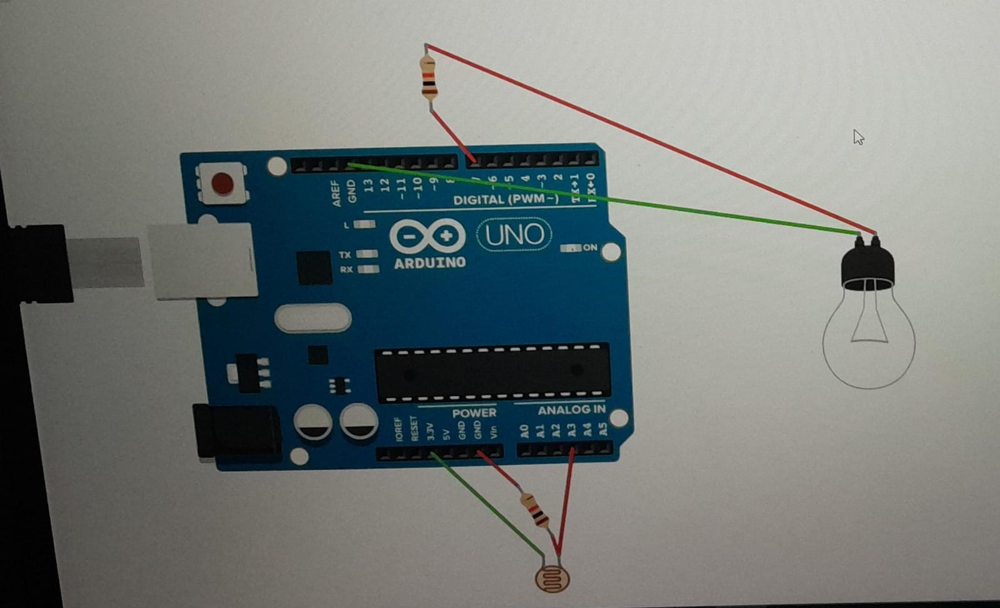
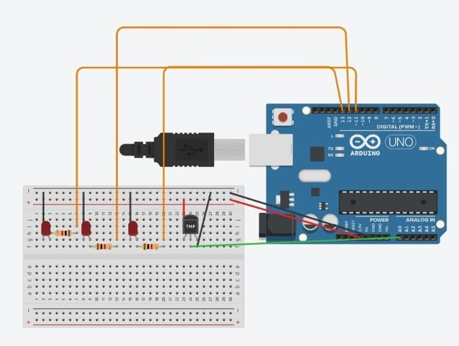
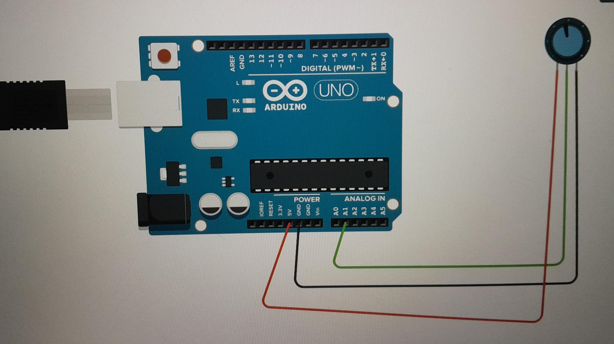
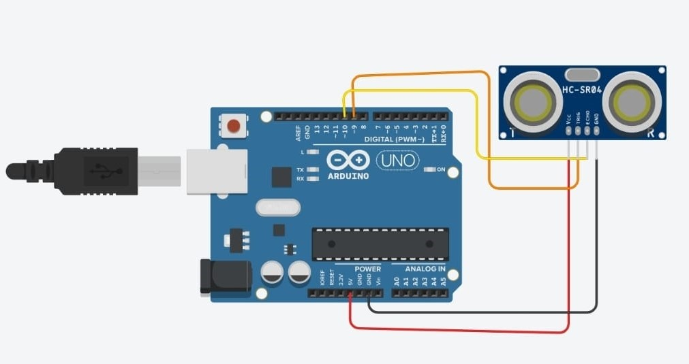
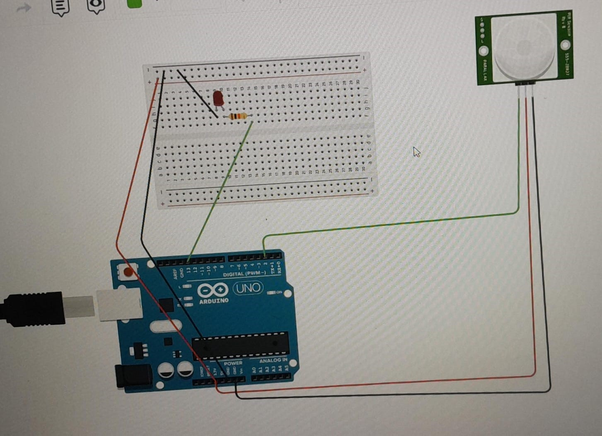
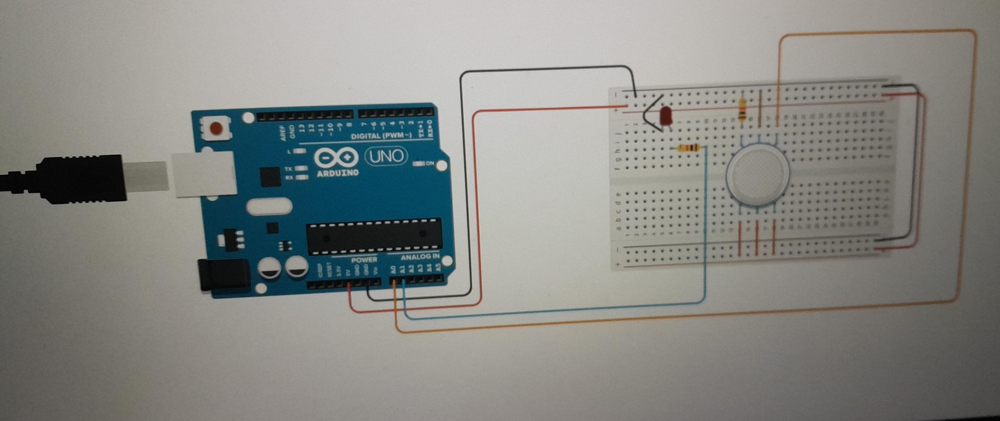
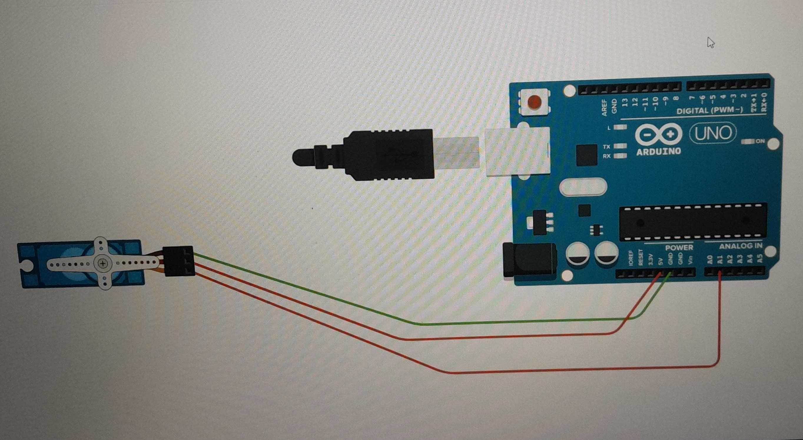

Write a Program to enable Switching effect in LED using Arduino
Objective: To Combine basic hardware and software interactions,offering a tangible demonstration of how code can control physical components.

void setup()
{
pinMode(8, OUTPUT);
}
void loop()
{
digitalWrite(8, HIGH);
delay(1000); // Wait for 1000 millisecond(s)
digitalWrite(8, LOW);
delay(1000); // Wait for 1000 millisecond(s)
}
Write a Program to interface light Sensitive Registor with Arduino
Objective: To Glow a bulb by sensing the light sensitive Resistor, which is also known as Light Dependent Resistor(LDR). USING ARDUINO

int ldr=A3;
int bulb=7;
void setup()
{
pinMode(bulb,OUTPUT);
pinMode(ldr,INPUT);
}
void loop()
{
if(analogRead(ldr)>500)
{
digitalWrite(bulb,0);
}
else{
digitalWrite(bulb,1);
}
}
Write a Program to interface Temperature sensor with Arduino
Objective: To known the type of sensors used to measure the temperature of the surroundings using Arduino and display the Result on serial Monitor or any other availaible display units.

const int TempSensor = A0;
const int ledCool = 6;
const int ledNormal = 5;
const int ledHot = 7;
void setup(){
pinMode(ledCool,OUTPUT);
pinMode(ledNormal,OUTPUT);
pinMode(ledHot,OUTPUT);
}
void loop(){
int sensorValue = analogRead(TempSensor);
float voltage = (sensorValue/1024.0)*5.0;
float temperatureC = (voltage - 0.5)*100;
Serial.print("Temperature: ");
Serial.print(temperatureC);
Serial.println("C");
if(temperatureC < 20){
digitalWrite(ledCool,HIGH);
digitalWrite(ledNormal,LOW);
digitalWrite(ledHot,LOW);
} else if(temperatureC >= 20 && temperatureC <30){
digitalWrite(ledCool,LOW);
digitalWrite(ledNormal,HIGH);
digitalWrite(ledHot,LOW);
} else {
digitalWrite(ledCool,LOW);
digitalWrite(ledNormal,LOW);
digitalWrite(ledHot,HIGH);
}
delay(500);
}
Write a Program to interface Arduino with Humidity Sensor
Objective: To know The Procedure of Interface to Humidity Sensor with Arduino and Provide the Output on Serial Monitor or any availaible display. To know an Alternative Approach For Indicating humidity control Rate by using an LED.

const int analogIn = A1;
int humiditySensorOutput= 0;
void setup()
{
Serial.begin(9600);
}
void loop()
{
humiditySensorOutput= analogRead(analogIn);
int humidityPercentage= map(humiditySensorOutput,0,1023,10,70);
Serial.print("Humidity: ");
Serial.print(humidityPercentage);
Serial.println("%");
delay(5000);
}
Write a Program to interface Arduino with UltraSonic Sensor
Objective: To make Student Aware about the Procedures for interfacing an Arduino Board with an UltraSonic Sensor. This Practical will Provide an idea of implementing a range of finding based Projects.

const int trigPin = 9;
const int echoPin = 10;
long duration;
int distance;
void setup()
{
Serial.begin(9600);
pinMode(trigPin, OUTPUT);
pinMode(echoPin, INPUT);
}
void loop()
{
digitalWrite(trigPin, LOW);
delayMicroseconds(2);
digitalWrite(trigPin, HIGH);
delayMicroseconds(10);
digitalWrite(trigPin, LOW);
duration = pulseIn(echoPin,HIGH);
distance = duration * 0.034 / 2;
Serial.print("Distance: ");
Serial.print(distance);
Serial.println(" cm");
delay(500);
}
Write a Program to interface Parsive Infrared Sensor
Objective: To make Student understand the procedure used for interfacing a Digital Infrared sensor(more specifically,PIR(Parsive Infrared Sensor)).It will help students to explore various object Tracking based project.

int sensorState= 0;
void setup()
{
pinMode(2,INPUT);
pinMode(LED_BUILTIN,OUTPUT);
}
void loop()
{
sensorState = digitalRead(2);
if(sensorState == HIGH)
{
digitalWrite(LED_BUILTIN,HIGH);
}
else
{
digitalWrite(LED_BUILTIN,LOW);
}
delay(10);
}
Write a Program to interface Arduino with Gas Sensor
Objective: To make Student understand the procedure require to interface a Gas Sensor with an arduino.It will help student to explore various Gas leakage or smoke presence detection based Projects

int LED=A1;
//const int gas=0;
int MQ2pin=A0;
void setup(){
Serial.begin(9600);
pinMode(LED,OUTPUT);
}
void loop(){
float sensorValue,MQ2pin;
digitalWrite(LED,LOW);
sensorValue=analogRead(MQ2pin);
if(sensorValue>=200){
digitalWrite(LED,HIGH);
Serial.print(sensorValue);
Serial.println(" | Smoke Detected");
}
else{
digitalWrite(LED,LOW);
Serial.println("Sensor Value : ");
Serial.println(sensorValue);
}
delay(1000);
}
Write a Program to interface an Arduino with Servo Motor
Objective: To make Student understand the procedure require to interface a Servo Motor with an Arduino. It will help students to explore various robot related automation Projects

#include< Servo.h>
Servo servoBase;
void setup(){
servoBase.attach(A1);
servoBase.write(0);
}
void loop(){
for(int i=0;i<=180;i=i+10){
servoBase.write(i);
delay(700);
}
}